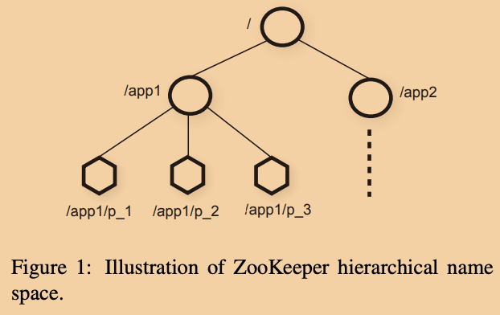

本文是我阅读这篇论文过程中的笔记，以及一些自己的思考。
之前的Raft文章中，介绍了一个读写操作都是linearizable的系统。这类系统能够让集群提供的服务在用户看来仿佛在和单机系统交互。仿佛这种化零为整的效果应该就已经是完美的解决方法没有任何问题？
但是这样的系统有一个致命的问题是：如果你为集群购置了N台机器，那么理想情况下你应该得到N倍的性能，再不济至少能提升一些性能吧。但是遗憾的是，如果回顾Raft中的设定，leader节点处理所有用户请求，负责协作所有follower，是整个系统的瓶颈所在。更神奇的是，如果在一个Raft集群中添加更多的机器，反而会让leader的工作负担更大，让整个系统的性能下降（但是获得了更高的容错性）。
ZooKeeper就是这样一个系统，它的其中一个特点就是能够在增加服务器数量的同时，大幅度的提升读操作的性能。
简介
对于分布式系统而言，往往有很多关于协作（coordination）相关的不同需求，比如配置管理、成员管理、leader选举、互斥锁等等。但是如果看类似像Raft的算法，其实向外只暴露了一个接受Command并进行广播复制的接口，有些功能Raft内置了（所以难以针对应用需求自定义），但是有更多多样的需求比如像分布式锁这样的服务，Raft对外提供的接口还是太简单了。
而ZooKeeper是一个通用的协作集群服务能够满足这些多样的协作需求。ZooKeeper是构建于名为Zab的原子广播协议之上的，Zab我们可以大致等效认为它是和Raft一样的基于leader的共识算法。
为了展示ZooKeeper是如何能够对外提供如此多样的协作服务，我先对比一下使用ZooKeeper和Raft的应用的架构：
- 使用Raft的应用：
- 应用程序层
- Raft层（共识层）
- 使用ZooKeeper的应用：
- 应用程序层
- ZooKeeper服务层
- Zab层（共识层）
如果我们把Zab换成Raft的话，可以看到ZooKeeper其实是在应用程序和最下面的共识服务之间，封装了一个中间层，该层中基于共识算法提供了一些更丰富的基础API给应用程序，然后应用程序基于这些API能够按需实现很多协作相关的功能。
所以从设计者的角度来看，ZooKeeper究竟应该提供哪些API作为基础API，这些API接口应该如何设计，才是核心问题所在。
ZooKeeper服务层
术语
在这篇论文中，使用客户端（client）来表示使用ZooKeeper服务的应用程序；使用服务器（server）表示运行着ZooKeeper服务（某个服务器上）的进程；使用znode来表示ZooKeeper服务层中的某个数据单元，众多znode通过树形结构进行组织，这种由znode组成的树形结构被称为data tree。客户端和一个服务器建立的通信连接被称为会话（session），客户端通过会话发送请求。
服务概览
客户端使用ZooKeeper客户端库来发送请求使用服务，除了能用来使用服务，客户端库还会负责维护客户端和ZooKeeper服务器之间的网络连接。
在客户端的眼中，ZooKeeper服务器将数据抽象为一个个znode，而且客户端能够通过ZooKeeper API来操作znode。
因为在ZooKeeper中使用树状结构来组织znode，所以为了引用一个znode使用的是一个类似UNIX文件路径的形式。

所有的znode都可以存放数据。除了ephemeral znode所有znode都可以有子znode。
客户端可以创建两种类型的znode：
- Regular：需要客户端显式的删除和创建他们。
- Ephemeral：客户端创建他们后，可以显式的删除他们，也可以在会话失效时，让系统自动进行删除。
另外作为Regular类型的znode的一种特例，还有一种特殊的sequential文件，这种文件会保证在文件名后追加一个单调递增的计数器，在同一个父节点下创建的sequential文件保证计数器单调递增。
ZooKeeper实现了一个监听机制（watch）让客户端在无需轮询的情况在某个znode发生变更时收到通知。当客户端发起一个读请求的时候，可以同时设置一个watch标识，该操作会和其他调用一样正常退出，不同的地方在于，服务器会保证在指定路径对应的znode发生变动时给客户端发送一个通知。
这种监听请求会在触发一次后或者会话终止时移除，所以客户端在收到一次通知时得到的讯息应该是：指定路径的znode至少被修改了一次，对应的数据已经变更。
从宏观来看，ZooKeeper就像只提供了整体读写接口的文件系统。正是因为这种树状结构使得一个ZooKeeper能够提供应用间数据隔离以及权限访问的功能，以此更好的同时为多个应用提供协作服务。
虽然看起来像一个文件系统，但是ZooKeeper并不是设计作为一个通用分布式存储服务的，ZooKeeper主要存储的是应用元数据，尤其是那些和协作相关的元数据。
客户端API
这里列出了ZooKeeper提供的部分API：
create(path, data, flags)：在指定path创建一个znode，返回创建的znode的名字。flags支持三种类型：regular，ephemeral，sequential。delete(path, version)：如果path位置的znode的版本号是指定的version的话，就删除它。exists(path, watch)：返回一个布尔值表示path位置的znode是否存在。watch参数为true的话，会对对应znode注册一个监听器。getData(path, watch)：返回对应znode的数据内容以及元信息。元信息包含版本信息等。这里的watch参数和exists类似，不同点在于如果对应znode不存在的话，不会设置监听器。setData(path, data, version)：如果znode为指定版本的话，设置znode内容为data。getChildren(path, watch)：返回指定znode的所有子znode的名字列表。sync(path)：等待客户端直接连接的那个服务器将所有的pending的写操作执行完成。path参数目前是没有用的。
以上所有接口都有同步版本和异步版本。
在ZooKeeper中没有文件句柄的概念，操作文件需要使用文件的全路径名。这种实现使得服务端不用再维护一个句柄表。
所有的和修改相关的接口都接受一个version参数，如果znode的实际的version和参数不符，那么操作会失败，并返回unexpected version错误。如果参数中version为-1的话，那么意味着不需要进行version检查。
操作顺序约束
ZooKeeper有两个基本的顺序保证：
- Linearizable writes
- FIFO client order
第一个约束，保证了全局的来自所有客户端的更新操作请求都是有序执行的，是符合Linearizability定义的。
第二个约束，保证了同一个客户端发出的所有读写请求均按序执行。所以这里并不保证不同客户端之间的读写请求之间的顺序，所以读请求会读到过期的数据。
ZooKeeper的所有的写请求都会被转发给leader进行定序处理，而所有的读请求会被客户端直接相连的那个服务器本地直接处理。
这里的第二条约束上对读一致性要求上的放松才使得ZooKeeper的读性能能随着服务器数量的上升而增长。因为读请求在服务器本地处理，而所有服务器中只有leader保证一直有最新的数据，所以读请求可能会读到全局过期的数据。
如果具象一下这个可能的问题，我们假设有两个客户端A，B，在A向ZooKeeper发送一个写操作之后，B在发送一个读请求去读同样的znode，因为第二个约束中没有限制不同客户端之间读写请求的linearizability，所以B的读请求并不能保证读到A的写操作。
为了解决这个问题，有两个方案：
- 在B发送读请求之前先发送一个写请求。根据顺序性约束可以使得客户端B的读请求一定在B的写请求之后执行，而B的写请求一定是在A的写请求之后执行。
在读请求前调用一个sync，直接强制等到所有pending的写操作结束后，再执行读操作。（sync的实现可能就是另一种形式的没有数据的写请求）
为了更清楚体现这两个约束之间是如何相互影响的，考虑如下场景：
一个包含多个服务器的系统有一个leader和多个worker。当一个leader当选的时候，需要修改很多散落在不同znode的配置参数，并且在其修改成功后通知其他worker进行读取。
在以上场景下，我们有两个要求：
- 当新的leader开始修改配置的时候，我们不希望其他worker去读取使用这些正在被修改的配置信息。
- 如果该leader在修改配置的过程中宕机了，我们不希望其他worker去使用这些被部分修改的配置信息。
如果使用ZooKeeper来解决这个问题，可以当新的leader执行如下伪代码：
delete("ready", version)
update configuration file1
update configuration file2
create("ready", data, flags)
而worker使用如下伪代码，这里通过上面两种方法之一保证worker的读请求是在删除ready文件之后执行：
if !exists("ready", true):
wait notification
read configuration file1
read configuration file2
服务器会保证发送通知和响应读请求是按序执行的，是不可能出现先响应读请求，再发送通知的情况，所以该代码将能够正常完成工作。
协作样例
这一节展示了一些基于ZooKeeper API实现的一些功能更加强大的元语。
配置管理
假设一个应用集群需要能够在运行过程中动态的修改集群配置。
最简单的情况下，假设该集群的配置是存放在ZooKeeper中的一个znode中，记为Zc。那么可以让该集群中的所有节点在启动的时候都去watch配置信息Zc，这样只要Zc被更新了，所有节点都会收到通知，各自进行更新配置的操作，之后再各自重新注册watch。
Rendezvous
有时候在分布式系统中，可能配置信息是动态生成的，只有在启动只有才能生成配置信息。比如，可能一个系统是由一个master和多个worker组成的，而master的启动是由调度器来负责的，所以worker节点启动的时候并不知道应该和哪个master建立连接。
解决方案是，先约定一个znode，Zr，将其全路径作为启动参数传给所有节点，当master被启动之后，向Zr中写入它的信息，当worker被启动之后，他们去读取Zr并注册watch。这样即使worker启动的更早，Zr中还没有写入信息，worker也会在之后收到变动通知后进行读取。
成员管理
成员管理主要利用的是ephemeral类型的znode的能够和会话同生同死的特性。
可以将一个znode，Zg，作为启动参数传给集群中的所有节点，用来代表一个集群。每当一个该集群中的节点启动都会在Zg下面创建一个ephemeral类型的znode，当然还需要要求每个ephemeral znode都有一个唯一的名字，可以通过在创建znode时设置sequential flag来辅助得到。
通过这种设置启动的节点，只需通过列出Zg下的所有znode，就可以得到其集群中所有节点的状态信息。当然如果有监控节点状态的需求的话，可以各自按需注册watch。
简单互斥锁实现（存疑）
使用 ZooKeeper的API也可以实现一些同步元语。
最简单的锁实现是使用“lock 文件”。一个互斥锁对象由一个znode表示。为了获取一个锁，所有客户端尝试去创建一个指定名称的ephemeral类型的znode。如果一个客户端成功的创建了该文件，那么就代表其成功获取到了该锁，而其他没有成功的客户端会注册watch等待对应的锁文件被删除后再次尝试获取。伪代码如下：
func Aquire(){
for{
if create("/l/lock", EPHEMERAL)
return
if exists("/l/lock", true)
wait the notification
}
}
在看到论文中这一段的时候，我对使用这种分布式锁的场景产生了一个疑问：
一般来说获取一个互斥锁的意义在于保护一段操作的原子性，但是这种分布式锁真的能够保证吗？如果一个客户端A成功获取到了该互斥锁，然后开始处理一些临界区操作，如果此时在处理到一半客户单A奔溃了呢？对应的锁会自动被释放，下一个获取到该锁的客户端，将会访问到脏数据。
为了解决这个问题，我觉得，可能让每个获取到锁的节点都先进行文件正确性的验证，然后进行修复或者进行其他的修正性处理。或者说，使用这个锁服务的是类似MapReduce中的worker，每次获取到锁，都将任务从头计算一遍。
另一个想到的问题是，如果在create执行失败之后，exists执行之前，lock被删除了，那么在注册完监听器之后会直接进行下一轮循环，如果下一轮循环create执行成功了，那么该客户端就会因为自己的create而发送收到了一条通知，又或者这个注册的过程不断循环下去，会不会造成什么问题呢？
论文中还针对该实现提出了其他的问题：herd effect，羊群效应，也就是说每次一旦一个锁被释放，会唤醒所有在等待的客户端，而最终只会有一个客户端能够成功获取到锁，所以这是不必要的网络消耗。
为了解决这个羊群效应，可以使用下面锁实现。
无羊群效应的锁实现
约定一个znode l，代表该锁。然后将所有想要获取锁的客户端的请求进行排队，进行有序获取。下面是该设计的伪代码实现。
func Lock(){
n = create(l + "/lock-", EPHEMERAL|SEQUENTIAL)
for {
C = getChildren(l, false)
if n is the lowest znode in C
exit
p = znode in C ordered just before n
if exists(p, true)
wait for watch event
}
}
func Unlock(){
delete(n)
}
这里巧妙的利用sequential znode将所有客户端的请求进行了排队。
为什么说这个解决了羊群效应呢？因为在这个实现中，每个没有等待锁的客户端只关注紧邻的排在前面一位的客户端，只有在前一位客户端对应的znode被删除后，才会被唤醒。
读到这里的时候，我也有一个疑问，为什么需要循环呢？不是每个客户端只需要等待上一个客户端就好了吗？甚至为什么需要获取所有的节点呢？直接将自己的序号减一得到前一个客户端对应znode的名称不就好了么？但是不是这样的，循环是必要的，因为客户端可能会宕机，可能会放弃获取锁，所以前一个客户端的znode被删除了，并不能保证当前客户端一定能获取到锁。
这种实现有如下好处：
- 没有羊群效应
- 无需轮询或者超时机制
- 将获取锁的过程可视化，更加利于调试和干预。
读写锁
func WriteLock(){
n = create(l + "/write-", EPHEMERAL|SEQUENTIAL)
for {
C = getChildren(l, false)
if n is lowest znode in C
exit
p = znode before n // 需要关心最近的无论write或者read znode
if exists(p, true)
wait for event
}
}
func ReadLock(){
for {
n = create(l + "/read-", EPHEMERAL|SEQUENTIAL)
C = getChildren(l, false)
if no write znodes lower than n in C
exit
p = write znode just before n // 只关心最近的那个write znode
if exists(p, true)
wait for event
}
}
Double Barrier
Double Barrier是一种能够让客户端同步的控制某个任务的开始和结束的协作模式。当barrier中注册客户端的数量超过某个预定阈值之后，所有barrier中注册的客户端都会开始他们的计算，当客户端结束了计算任务后，会自动退出barrier。
我们使用一个ZooKeeper中的znode来表示一个barrier，称为b。客户端通过在b下创建或删除子znode来进行注册或者退出。
所有就绪的客户端会监控一个名为ready的znode，一旦该文件被创建了代表计算任务开始。ready znode由打破阈值的那个客户端负责创建。而当所有的子znode都被删除后，控制任务进度的客户端就知道任务已经结束，可以继续推进了。为了高效实现检测整个计算任务的结束，可以通过随机watch一个子znode，当收到其被删除的通知后，再检查是否还有其他的znode没有被删除，如果有再随机选一个，如此循环。
补充：实现一个简单的累加器
比如说有个简单的需求，想要每次调用都让某个znode中的值累增1，那么可以这么实现吗？
func Increment(){
x = getData("counter", false)
setData(x+1, -1)
}
显然是不行的，因为在这个getData和setData之间可能因为网络延迟已经发生若干个Increment了。这两个操作之间并不是原子性的。
正确的实现应该是如下：
func Increment(){
for{
x, v = getData("counter", false)
if setData("counter", x+1, v)
return
}
}
当然这种实现也会有潜在的羊群效应，可以通过之前的无羊群效应的锁来解决。
另外如果当前客户端连接的那个服务器被网络分区了，那么该客户端读到的version将永远是过期的，那么该循环可能不用终止，直到网络分区被修复。
ZooKeeper实现
ZooKeeper内部通过多副本技术提供了高可用性支持。下面是ZooKeeper内部的组件架构图。

当ZooKeeper服务器收到一个请求后，将写请求转发给leader并通过原子广播协议进行提交，如果是读请求，则就在本机处理返回了。
每个ZooKeeper服务器副本中运来存储data tree的数据库为一个内存数据库。每一个znode默认最多只能存放1MB的数据，当然，这个最大值是可以配置的。
因为是内存数据库，所以ZooKeeper也是和大多数系统一样使用Write Ahead Log来实现可恢复性，并且为了不让Log占用空间过大，通过周期创建快照来清理空间。
每一个ZooKeeper都可以服务客户端，但是每个客户端只能严格连接一个服务器来进行提交请求。
请求处理器Request Processor
因为客户端支持异步发送请求，所以当leader收到一个请求时可能还有很多写请求没有处理完，所以服务器会先预计算应用该写请求后的系统状态。比如客户端发送了一个修改某个version的znode的setData请求，leadre在收到之后会由此生成一个包含了新数据、新版本号以及更新时间戳的setDataTXN。如果未来真正执行的时候，发生了比如版本号不匹配的错误，那么会产生一个errorTXN错误。
Replicated Database
为了不让log占用太多磁盘空间，并且为了减少重启恢复状态的时间，ZooKeeper会定期的进行快照，并且每次恢复状态的时候只转发从最近一次快照之后的消息。
ZooKeeper的快照为fuzzy snapshot。因为ZooKeeper在创建快照的过程中并不对锁定当时的状态数据或者说停止服务，ZooKeeper的实现为保证原子性的直接深度优先遍历，所以最终的生成的快照状态可能并不能和数据库历史中的某一时刻相对应。
但是这并没有问题，因为即使使用这样一份快照，基于它重放快照时刻起后面的全部操作信息，最终还是能够保证恢复到最新状态的。这是因为ZooKeeper中，状态变更只要按照相同的顺序重放，即使重放多次，最终得到的状态都是一样的。
比如，假设在data tree中有两个节点/foo和/goo，他们存储的内容分别为f1和g1，并且在快照开始时他们的版本号均为1。假设在生成快照期间，会执行以下状态变更：
格式为：
在执行完这些状态变更后，/foo和/goo应该存储的值分别为f3和g2，版本号分别为3和2。但是生成的fuzzy snapshot可能记录的是f3和g1，该状态并不是一个合法的瞬时状态，但是如果重新按序执行上面的操作一遍，最终得到的还是一致的正确的最新的状态。
客户-服务端交互
这一节主要讲的是如何做到前面提到过两个顺序性保证的。
首先对于第一个全局linearizable的写操作，是因为所有的写操作都会被转发给leader，而leader在执行写操作的时候是一个一个执行的，并不会和其他读或者写操作进行并发，因此这也保证了文件变动通知发送的有序性。另外需要注意的是，监听事件的注册信息和事件的发送都是由和客户端直接相连的那个服务器处理的。
对于第二个对于每个客户端的所有读写请求之间的顺序性关系，是通过让每个读请求中都加入一个参数：该客户端所见到过的最新的一个zxid。什么是zxid呢，其实论文中也没有具体的讲，我个人的理解是类似Raft中log的index，是一个全局唯一且累增的标识符。每次当客户端发送一个写请求后，服务端会立刻返回（不等待执行）该写请求在请求队列中的zxid，然后客户端会不断记录自己所收到过的最大的zxid，并附在读请求中，这样服务该客户端的服务器为了满足客户端的顺序性要求，一定等到zxid对应的请求提交（commit）以后，才能执行读请求，但是这是不足以保证让客户端读到最新的数据的。
但是对于一个分布式系统，我们应该更多想的是各种奇怪的错误，比如，如果某个客户端所连接的那个服务器发生了故障，怎么办？此时客户端会自动的切换到另一个服务器上，服务器会保证在将数据同步到客户端所保存那个最大zxid的时间点前，不会和客户端建立session。但是不用担心，因为Zab协议提交的大多数原则，客户端总能找到一个数据至少和他一样新的服务器的。
附录：阅读过程中的问题
- 如果客户端发送的写请求因为网络延迟，乱序到达了leader，那么leader怎么保证最终将这些请求按照客户端发出时的顺序进行执行呢？
论文中没有提。猜想可能是每个客户端都维护了一个累增的sequnce number，然后leader也为每个客户端维护了一个expected sequnce number，类似TCP中解决乱序到达的实现。